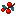
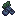
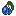

The Mixture is a Mythical consumable added by Earthify.
Crafted from a collection of rare berries, flowers and oils, the Mixture permanently enhances the player after consumption.
Obtaining
Mixture can only be obtained through crafting.
Crafting
| Sweet Berries |  Goji Berries |
 Blueberries |
 Chorus Fruit Chorus Fruit |
Rosewood Oil | Raspberries |
 Glow Berries Glow Berries |
Winter Flower |  Mahonia Berries |
Effects
Drinking a Mixture permanently removes all active negative status effects and grants several permanent bonuses.
| ❤ Extra Health | +20 Health (+10 Hearts) |
| ⛏ Mining Speed | +25% |
| ⬜ Block Reach | +2 Blocks |
| 🎯 Entity Reach | +2 Blocks |
| 🪂 Safe Fall Distance | +5 Blocks |
| ☠ Negative Effects | Removed |
Persistence
All bonuses granted by the Mixture are permanent.
The bonuses persist after death and are automatically restored when the player respawns.
Usage
Consuming a Mixture takes 1.6 seconds and leaves behind an empty Glass Bottle.